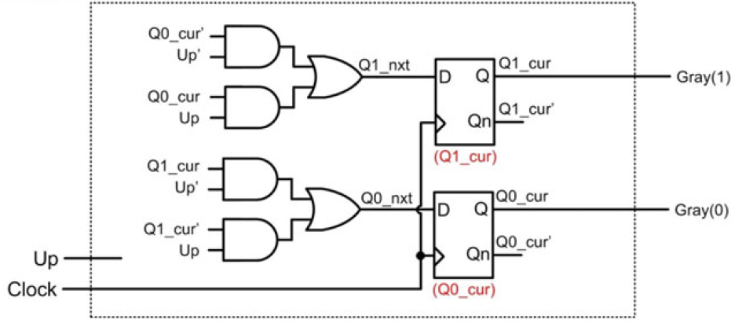
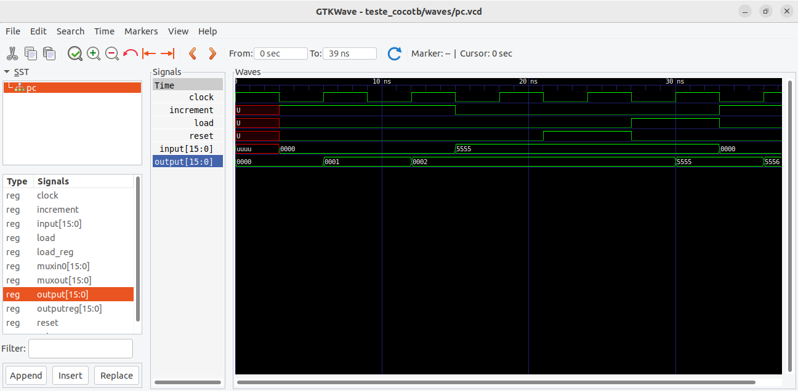

Av2 - 2° Semestre de 2023
Avaliação 2 - Elementos de Sistemas
| Pontos HW | Pontos SW |
|---|---|
| 40 | 10 |
- Avaliação individual.
- 120 min total.
- Ficar no blackboard durante a prova.
- Fazer commit ao final de cada questão.
- Lembre de dar push ao final.
1. Lógica combinacional - alarme
| Pontos HW | Pontos SW |
|---|---|
| 10 | 0 |
Um banco quer instalar um sistema de alarme com sensores de movimento. Os sensores indicam '1' quando há movimento e '0' quando não há. Há duas zonas de segurança X e Y, sendo que a zona X é composta pelos sensores A, B e C enquanto a zona Y possui os sensores D, E, F e G. Um alarme (S) dever ser disparado (nível lógico '1') sempre que pelo menos um dos alarmes Sx e Sy de cada zona for disparado. Para que Sx seja disparado, ao menos dois dos sensores A, B e C devem indicar movimentos simultaneamente. Para que Sy seja disparado, ao menos dois dos sensores D, E, F e G devem indicar movimentos simultaneamente.
Escreva o código me VHDL para o alarme S.
Implementação
Implemente a saída S no arquivo src/alarme.vhd.
Lembre de testar com pytest -k alarme
Rubrica para avaliação:
| Pontos HW | Descritivo |
|---|---|
| 3 | Implementação de Sx |
| 3 | Implementação de Sy |
| 4 | Implementação de S |
2. Lógica combinacional - VHDL
| Pontos HW | Pontos SW |
|---|---|
| 10 | 0 |
Considere o código vhdl a seguir:
library IEEE;
use IEEE.STD_LOGIC_1164.ALL;
entity blocoX is
port (
a: in STD_LOGIC_VECTOR(15 downto 0);
q: out STD_LOGIC_VECTOR(15 downto 0));
end entity;
architecture rtl of blocoX is
SIGNAL y: STD_LOGIC_VECTOR(7 downto 0);
begin
y <= a(15 downto 8) xor a(7 downto 0);
q <= "00000000" & y;
end;
Questões:
- Explique o que o circuito faz no arquivo
src\blocoX.txt. - Desenhe o circuito lógico correspondente.
Rubrica para avaliação:
| Pontos HW | Descritivo |
|---|---|
| 5 | Para cada item |
3. Somador
| Pontos HW | Pontos SW |
|---|---|
| 10 | 0 |
Queremos agora implementar o circuito digital da figura a seguir:

Esse circuito é um somador Carry-Lookahed de 4 bits que evita a propagação do vaium que ocorre no somador visto em aula.
Implementação/questão:
- Implemente o somador de 4 bits no arquivo
src\add4.vhd
Para simplificar a implementação, considere c0 = '0'. Não é necessário implementar a saída c4
Considere que a saída q no arquivo vhd representa um vetor com os bits S3 S2 S1 S0.
- Qual a vantagem em se evitar a propagação do carry entre os Full-Adders? Responda no arquivo
src\carry.txt.
Lembre de testar com pytest -k add4
Rubrica para avaliação:
| Pontos HW | Descritivo |
|---|---|
| 7 | Implementação do somador |
| 3 | Vantagem do circuito |
4. Lógica sequencial
| Pontos HW | Pontos SW |
|---|---|
| 10 | 0 |
Queremos agora implementar o circuito digital da figura a seguir:

Utilize o Flip-Flop D desenvolvido em aula para implementar o circuito.
Implementação/questão:
- Implemente o circuito no arquivo
src\circuito.vhd - Qual a função do circuito? Responda no arquivo
src\circuito.txt.
Lembre de testar com pytest -k circuito
Rubrica para avaliação:
| Pontos HW | Descritivo |
|---|---|
| 7 | Implementação do circuito |
| 3 | Função do circuito |
5. Identificação de erro
| Pontos HW | Pontos SW |
|---|---|
| 0 | 10 |
A figura a seguir apresenta as curvas obtidas no GTKWave como resultado da simulação do módulo pc.vhd.
Entretanto, esse módulo apresenta um erro. Identifique, a partir das curvas fornecidas a condição em que está ocorrendo o erro.

Implementação
Identifique o intervalo em que o erro ocorre e descreva qual seria o resultado esperado no arquivo src/erro_pc.txt.
Rubrica para avaliação:
| Pontos SW | Descritivo |
|---|---|
| 10 | Intervalo identificado e erro descrito corretamente. |
| 5 | Apenas o intervalo foi identificado corretamente. |